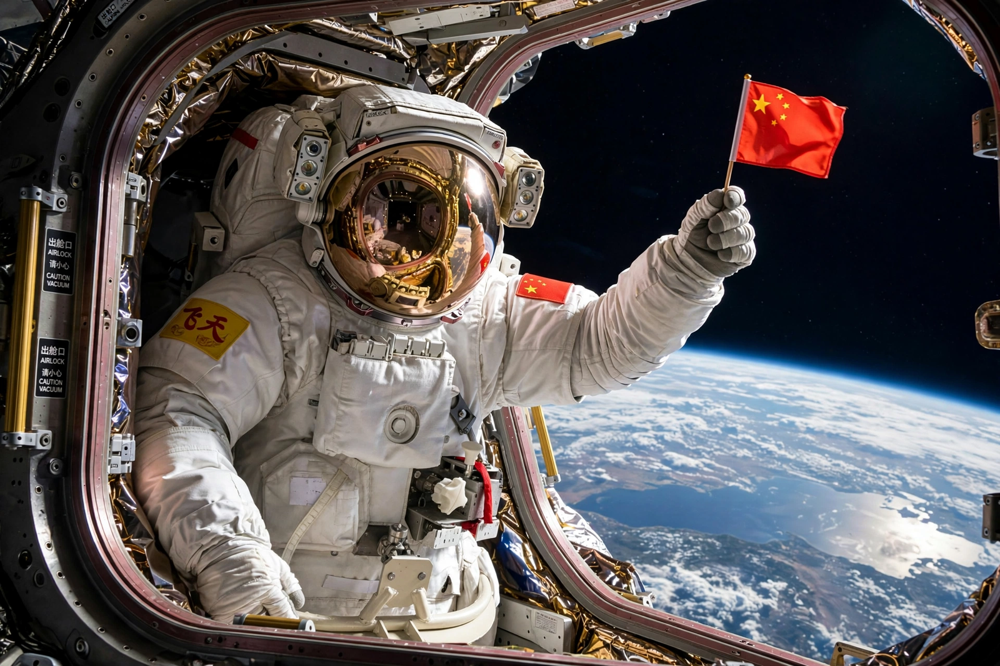

Zhai Zhigang
From Wikipedia, the free encyclopedia
| Zhai Zhigang | |
|---|---|
| Born | 10 October 1966, Heilongjiang |
| Occupation | Taikonaut (PLA Aerospace Force) |
| Missions | Shenzhou 7, Shenzhou 13 |
| Known for | First Chinese spacewalk (2008) |

Zhai's spacewalk, September 2008.Zhai Zhigang (born 1966) is a Chinese taikonaut who performed China's first spacewalk on 27 September 2008, during the Shenzhou 7 mission. Wearing the Chinese-developed Feitian spacesuit, he spent about 20 minutes outside the Shenzhou orbital module, waving a small Chinese flag in an image broadcast live and celebrated across China, while crewmate Liu Boming stood by in the airlock and Jing Haipeng monitored from inside.
Zhai, a former fighter pilot, was a finalist for China's first crewed flight in 2003 before being selected for the first EVA mission. He later commanded Shenzhou 13 (2021–22), the first six-month mission aboard the Tiangong space station, during which he performed two further spacewalks.
Significance
The Shenzhou 7 spacewalk demonstrated the third independent EVA capability, after the Soviet Union/Russia and the United States, and validated the technologies — airlock module, domestic suit, relay-satellite communications — needed for station assembly. Zhai's flag wave joined Yang Liwei's first flight among the defining images of China's crewed programme under the China Manned Space Agency.
See also
Shenzhou (spacecraft) · China Manned Space Agency · Tiangong space station · Extravehicular activity